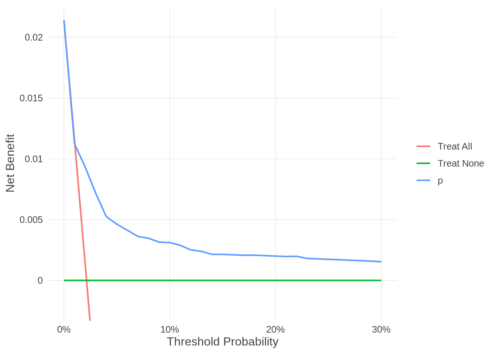
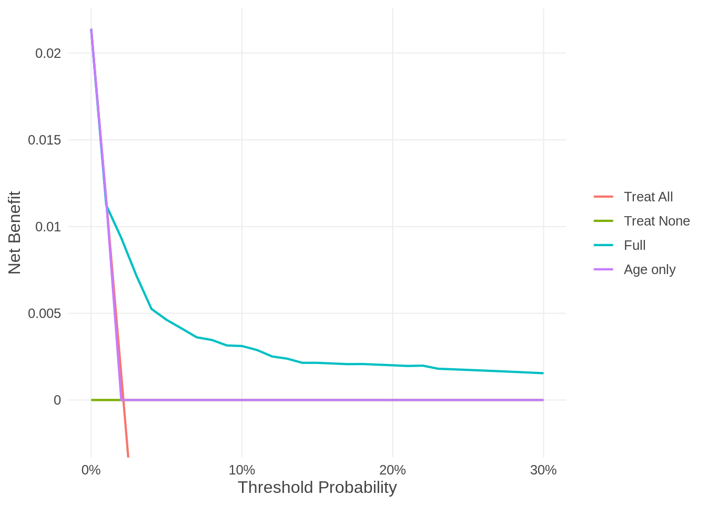

library("voipred.dev")
df_dev_binary <- gusto[1:5000, ]
df_val_binary <- gusto[5001:10000, ]
fit <- glm(day30 ~ age + Killip + sysbp + pulse,
family = binomial, data = df_dev_binary)
# Binary outcome: the predicted risks are all that is needed
df_val_binary$p <- predict(fit, newdata = df_val_binary, type = "response")
res <- nb_val(data = df_val_binary,
predicted_risk = df_val_binary$p,
outcome = "day30",
thresholds = seq(0, 0.3, by = 0.01))
resNet benefit of p: binary, n = 5000, 107 events (2.1%), prior improper Beta(0, 0)
threshold model NB_model NB_all NB_none delta_NB net_FP_avoided
0.00 p 0.02140 0.02140 0 0.000000 NA
0.01 p 0.01123 0.01152 0 -0.000283 -0.0280
0.02 p 0.00934 0.00143 0 0.007910 0.3876
0.03 p 0.00717 -0.00887 0 0.007173 0.5186
0.04 p 0.00525 -0.01938 0 0.005250 0.5910
0.05 p 0.00462 -0.03011 0 0.004621 0.6598
0.06 p 0.00412 -0.04106 0 0.004123 0.7079
0.07 p 0.00361 -0.05226 0 0.003613 0.7423
0.08 p 0.00346 -0.06370 0 0.003461 0.7723
0.09 p 0.00315 -0.07538 0 0.003145 0.7940
# 21 more thresholds; use summary() or as.data.frame()summary(res)Net benefit of p: binary, n = 5000, 107 events (2.1%), prior improper Beta(0, 0)
Best strategy: treat all 0.00-0.01, p 0.02-0.30
Largest delta_NB: p 0.00791 at 0.02
threshold model Se Sp NB_model NB_all NB_none delta_NB net_FP_avoided
0.00 p 1.000 0.000 0.02140 0.02140 0 0.000000 NA
0.01 p 0.720 0.578 0.01123 0.01152 0 -0.000283 -0.0280
0.02 p 0.533 0.897 0.00934 0.00143 0 0.007910 0.3876
0.03 p 0.411 0.946 0.00717 -0.00887 0 0.007173 0.5186
0.04 p 0.299 0.972 0.00525 -0.01938 0 0.005250 0.5910
0.05 p 0.252 0.985 0.00462 -0.03011 0 0.004621 0.6598
0.06 p 0.224 0.989 0.00412 -0.04106 0 0.004123 0.7079
0.07 p 0.196 0.992 0.00361 -0.05226 0 0.003613 0.7423
0.08 p 0.187 0.994 0.00346 -0.06370 0 0.003461 0.7723
0.09 p 0.168 0.995 0.00315 -0.07538 0 0.003145 0.7940
# 21 more thresholds; summary(x, thresholds = ) to chooseplot(res)
# The same, with the name of the column of `data` that holds the risks
nb_val(data = df_val_binary,
predicted_risk = "p",
outcome = "day30",
thresholds = c(0.05, 0.1))Net benefit of p: binary, n = 5000, 107 events (2.1%), prior improper Beta(0, 0)
threshold model NB_model NB_all NB_none delta_NB net_FP_avoided
0.05 p 0.004621 -0.03011 0 0.004621 0.6598
0.10 p 0.003111 -0.08733 0 0.003111 0.8140# Several models: their risks in one call
fit_age <- glm(day30 ~ age, family = binomial, data = df_dev_binary)
df_val_binary$p_age <- predict(fit_age, newdata = df_val_binary, type = "response")
both <- nb_val(data = df_val_binary,
predicted_risk = list(Full = df_val_binary$p, `Age only` = df_val_binary$p_age),
outcome = "day30",
thresholds = seq(0, 0.3, by = 0.01))
bothNet benefit of Full, Age only: binary, n = 5000, 107 events (2.1%), prior improper Beta(0, 0)
threshold model NB_model NB_all NB_none delta_NB net_FP_avoided
0.00 Full 0.02140 0.02140 0 0.000000 NA
0.00 Age only 0.02140 0.02140 0 0.000000 NA
0.01 Full 0.01123 0.01152 0 -0.000283 -0.0280
0.01 Age only 0.01152 0.01152 0 0.000000 0.0000
0.02 Full 0.00934 0.00143 0 0.007910 0.3876
0.02 Age only 0.00000 0.00143 0 -0.001429 -0.0700
0.03 Full 0.00717 -0.00887 0 0.007173 0.5186
0.03 Age only 0.00000 -0.00887 0 0.000000 0.2867
0.04 Full 0.00525 -0.01938 0 0.005250 0.5910
0.04 Age only 0.00000 -0.01938 0 0.000000 0.4650
0.05 Full 0.00462 -0.03011 0 0.004621 0.6598
0.05 Age only 0.00000 -0.03011 0 0.000000 0.5720
0.06 Full 0.00412 -0.04106 0 0.004123 0.7079
0.06 Age only 0.00000 -0.04106 0 0.000000 0.6433
0.07 Full 0.00361 -0.05226 0 0.003613 0.7423
0.07 Age only 0.00000 -0.05226 0 0.000000 0.6943
0.08 Full 0.00346 -0.06370 0 0.003461 0.7723
0.08 Age only 0.00000 -0.06370 0 0.000000 0.7325
0.09 Full 0.00315 -0.07538 0 0.003145 0.7940
0.09 Age only 0.00000 -0.07538 0 0.000000 0.7622
# 21 more thresholds; use summary() or as.data.frame()Net benefit of Full, Age only: binary, n = 5000, 107 events (2.1%), prior improper Beta(0, 0)
Best strategy: treat all 0.00-0.01, Full 0.02-0.30
Largest delta_NB: Full 0.00791 at 0.02; Age only none (never better than both default strategies)
threshold model Se Sp NB_model NB_all NB_none delta_NB
0.05 Full 0.252 0.985 0.004621 -0.03011 0 0.004621
0.05 Age only 0.000 1.000 0.000000 -0.03011 0 0.000000
0.10 Full 0.168 0.996 0.003111 -0.08733 0 0.003111
0.10 Age only 0.000 1.000 0.000000 -0.08733 0 0.000000
net_FP_avoided
0.6598
0.5720
0.8140
0.7860plot(both)
# the same with column names, with the fitted models, or a mix
nb_val(data = df_val_binary,
predicted_risk = list(Full = "p", `Age only` = "p_age"),
outcome = "day30",
thresholds = c(0.05, 0.1))Net benefit of Full, Age only: binary, n = 5000, 107 events (2.1%), prior improper Beta(0, 0)
threshold model NB_model NB_all NB_none delta_NB net_FP_avoided
0.05 Full 0.004621 -0.03011 0 0.004621 0.6598
0.05 Age only 0.000000 -0.03011 0 0.000000 0.5720
0.10 Full 0.003111 -0.08733 0 0.003111 0.8140
0.10 Age only 0.000000 -0.08733 0 0.000000 0.7860nb_val(data = df_val_binary,
predicted_risk = list(Full = fit, `Age only` = fit_age),
outcome = "day30",
thresholds = c(0.05, 0.1))Net benefit of Full, Age only: binary, n = 5000, 107 events (2.1%), prior improper Beta(0, 0)
threshold model NB_model NB_all NB_none delta_NB net_FP_avoided
0.05 Full 0.004621 -0.03011 0 0.004621 0.6598
0.05 Age only 0.000000 -0.03011 0 0.000000 0.5720
0.10 Full 0.003111 -0.08733 0 0.003111 0.8140
0.10 Age only 0.000000 -0.08733 0 0.000000 0.7860nb_val(data = df_val_binary,
predicted_risk = list(Full = fit, `Age only` = "p_age"),
outcome = "day30",
thresholds = c(0.05, 0.1))Net benefit of Full, Age only: binary, n = 5000, 107 events (2.1%), prior improper Beta(0, 0)
threshold model NB_model NB_all NB_none delta_NB net_FP_avoided
0.05 Full 0.004621 -0.03011 0 0.004621 0.6598
0.05 Age only 0.000000 -0.03011 0 0.000000 0.5720
0.10 Full 0.003111 -0.08733 0 0.003111 0.8140
0.10 Age only 0.000000 -0.08733 0 0.000000 0.7860# Optionally, the model instead of the risks: by default, or with your own
# prediction function
nb_val(data = df_val_binary,
predicted_risk = fit,
outcome = "day30",
thresholds = c(0.05, 0.1))Net benefit of fit: binary, n = 5000, 107 events (2.1%), prior improper Beta(0, 0)
threshold model NB_model NB_all NB_none delta_NB net_FP_avoided
0.05 fit 0.004621 -0.03011 0 0.004621 0.6598
0.10 fit 0.003111 -0.08733 0 0.003111 0.8140nb_val(data = df_val_binary,
predicted_risk = fit,
outcome = "day30",
thresholds = c(0.05, 0.1),
predict_function = function(model, newdata, ...)
predict(model, newdata, type = "response"))Net benefit of fit: binary, n = 5000, 107 events (2.1%), prior improper Beta(0, 0)
threshold model NB_model NB_all NB_none delta_NB net_FP_avoided
0.05 fit 0.004621 -0.03011 0 0.004621 0.6598
0.10 fit 0.003111 -0.08733 0 0.003111 0.8140# Optional prior information (binary outcome); the default uses the data only
nb_val(data = df_val_binary,
predicted_risk = df_val_binary$p,
outcome = "day30",
thresholds = c(0.05, 0.1),
prior = nb_uniform())Net benefit of p: binary, n = 5000, 107 events (2.2%), prior uniform Beta(1, 1)
threshold model NB_model NB_all NB_none delta_NB net_FP_avoided
0.05 p 0.004757 -0.02990 0 0.004757 0.6586
0.10 p 0.003253 -0.08712 0 0.003253 0.8134nb_val(data = df_val_binary,
predicted_risk = df_val_binary$p,
outcome = "day30",
thresholds = c(0.05, 0.1),
prior = nb_beta(prevalence = c(7, 93)))Net benefit of p: binary, n = 5000, 107 events (2.2%), prior Beta: prevalence Beta(7, 93), sensitivity Beta(0, 0), specificity Beta(0, 0)
threshold model NB_model NB_all NB_none delta_NB net_FP_avoided
0.05 p 0.004862 -0.02910 0 0.004862 0.6453
0.10 p 0.003272 -0.08627 0 0.003272 0.8059# Survival: death by 5 years (Rotterdam breast cancer data)
library(survival)
rott <- rotterdam
rott$years <- rott$dtime / 365.25
df_dev_survival <- rott[1:1500, ]
df_val_survival <- rott[1501:2982, ]
cox <- coxph(Surv(years, death) ~ age + size + nodes + grade,
data = df_dev_survival)
# the predicted risks of death by 5 years
sf <- survfit(cox, newdata = df_val_survival)
df_val_survival$p5 <- 1 - summary(sf, times = 5)$surv[1, ]
nb_val(data = df_val_survival,
predicted_risk = df_val_survival$p5,
outcome = ~ Surv(years, death),
horizon = 5,
thresholds = c(0.1, 0.2, 0.3))Net benefit of p5: survival, horizon 5, n = 1482, risk by horizon 47.9%, censoring KM, prior improper Beta(0, 0)
threshold model NB_model NB_all NB_none delta_NB net_FP_avoided
0.1 p5 0.1080 0.4206 0 -0.3126 -2.813
0.2 p5 0.0341 0.3481 0 -0.3140 -1.256
0.3 p5 0.0158 0.2550 0 -0.2392 -0.558# Optionally, the model instead of the risks: by default, or with your own
# prediction function (here the same risks as above)
nb_val(data = df_val_survival,
predicted_risk = cox,
outcome = ~ Surv(years, death),
horizon = 5,
thresholds = c(0.1, 0.2, 0.3))Net benefit of cox: survival, horizon 5, n = 1482, risk by horizon 47.9%, censoring KM, prior improper Beta(0, 0)
threshold model NB_model NB_all NB_none delta_NB net_FP_avoided
0.1 cox 0.1080 0.4206 0 -0.3126 -2.813
0.2 cox 0.0341 0.3481 0 -0.3140 -1.256
0.3 cox 0.0158 0.2550 0 -0.2392 -0.558nb_val(data = df_val_survival,
predicted_risk = cox,
outcome = ~ Surv(years, death),
horizon = 5,
thresholds = c(0.1, 0.2, 0.3),
predict_function = function(model, newdata, horizon, ...)
1 - summary(survfit(model, newdata = newdata), times = horizon)$surv[1, ])Net benefit of cox: survival, horizon 5, n = 1482, risk by horizon 47.9%, censoring KM, prior improper Beta(0, 0)
threshold model NB_model NB_all NB_none delta_NB net_FP_avoided
0.1 cox 0.1080 0.4206 0 -0.3126 -2.813
0.2 cox 0.0341 0.3481 0 -0.3140 -1.256
0.3 cox 0.0158 0.2550 0 -0.2392 -0.558# The same with conditional IPCW: censoring depends on age, nodes and grade
# (a Cox model of the censoring times, fitted by voipred)
nb_val(data = df_val_survival,
predicted_risk = df_val_survival$p5,
outcome = ~ Surv(years, death),
horizon = 5,
thresholds = c(0.1, 0.2, 0.3),
cipcw = ~ age + nodes + grade)Net benefit of p5: survival, horizon 5, n = 1482, risk by horizon 47.9%, censoring cIPCW (coxph), prior improper Beta(0, 0)
threshold model NB_model NB_all NB_none delta_NB net_FP_avoided
0.1 p5 0.1076 0.4206 0 -0.3130 -2.817
0.2 p5 0.0340 0.3482 0 -0.3142 -1.257
0.3 p5 0.0159 0.2550 0 -0.2391 -0.558# or your own censoring model, fitted to the validation data
cens <- coxph(Surv(years, death == 0) ~ age + nodes + grade,
data = df_val_survival)
nb_val(data = df_val_survival,
predicted_risk = df_val_survival$p5,
outcome = ~ Surv(years, death),
horizon = 5,
thresholds = c(0.1, 0.2, 0.3),
cipcw = cens)Net benefit of p5: survival, horizon 5, n = 1482, risk by horizon 47.9%, censoring cIPCW (coxph), prior improper Beta(0, 0)
threshold model NB_model NB_all NB_none delta_NB net_FP_avoided
0.1 p5 0.1076 0.4206 0 -0.3130 -2.817
0.2 p5 0.0340 0.3482 0 -0.3142 -1.257
0.3 p5 0.0159 0.2550 0 -0.2391 -0.558